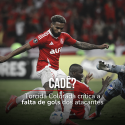
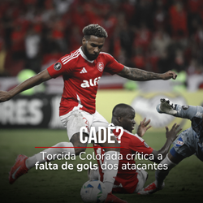

2 - 0 Arena MRV
Último jogo
12.06 - Brasileirão
- Beira-Rio
Próx. jogo
12.07 - Brasileirão
- Fonte Nova
Jogo adiado
A definir
 Classificação - Rodada 12
Classificação - Rodada 12
| Posição | Clube | Pontos | Jogos | Vitórias |
|---|---|---|---|---|
| 1 | Flamengo | 24 | 11 | 7 |
| 2 | Cruzeiro | 24 | 12 | 7 |
| 3 | RB Bragantino | 23 | 12 | 7 |
| 4 | Palmeiras | 22 | 11 | 7 |
| 5 | Bahia | 21 | 12 | 6 |
| 6 | Fluminense | 20 | 11 | 6 |
| 7 | Atlético-MG | 20 | 12 | 5 |
| 8 | Botafogo | 18 | 11 | 5 |
| 9 | Mirassol | 17 | 11 | 4 |
| 10 | Corinthians | 16 | 12 | 4 |
| 11 | Grêmio | 16 | 12 | 4 |
| 12 | Ceará | 15 | 11 | 4 |
| 13 | Vasco da Gama | 13 | 12 | 4 |
| 14 | São Paulo | 12 | 12 | 2 |
| 15 | Santos FC | 11 | 12 | 3 |
| 16 | Vitória | 11 | 12 | 2 |
| 17 | Internacional | 11 | 12 | 2 |
| 18 | Fortaleza | 10 | 12 | 2 |
| 19 | Juventude | 8 | 11 | 2 |
| 20 | Sport Recife | 3 | 11 | 0 |